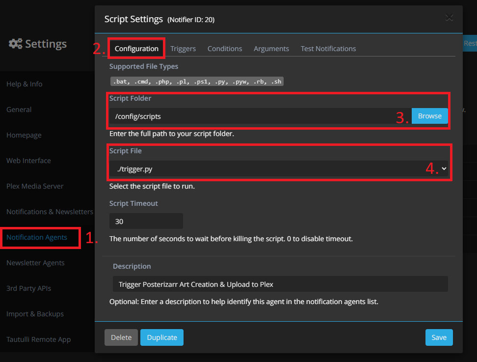
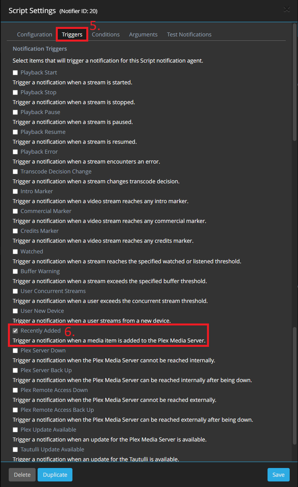
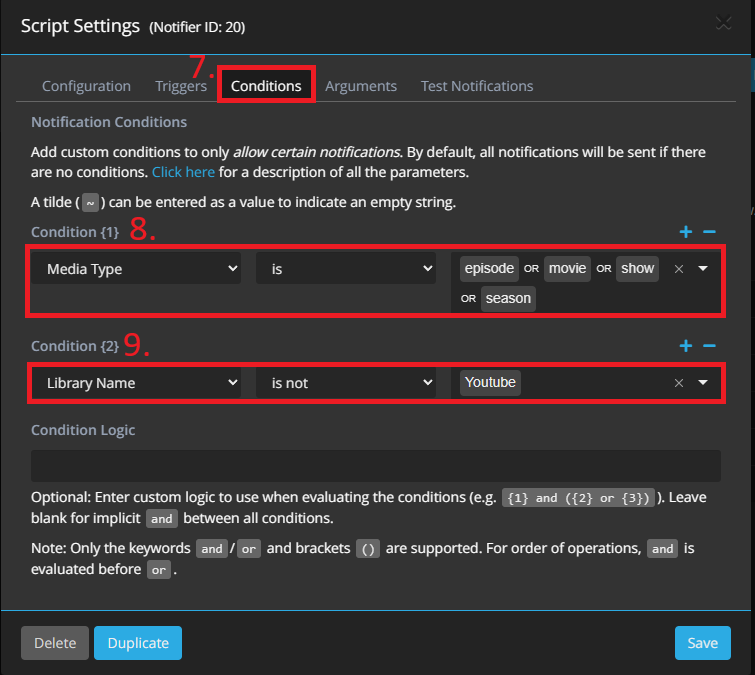
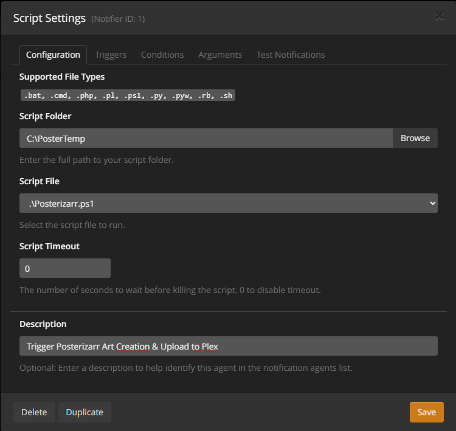

Usage & Modes
Automatic Mode
Run the script without any parameters:
On docker this way:
This will generate posters for your entire Plex library based on the configured settings.
The posters are all placed in AssetPath\.... This can then be mounted in Kometa to use as the assets folder.
Testing Mode
Run the script with the -Testing flag. In this mode, the script will create pink posters/backgrounds with short, medium, and long texts (also in CAPS), using the values specified in the config.json file.
These test images are placed in the script root under the ./test folder.
Tip
This is handy for testing your configuration before applying it en masse to the actual posters. You can see how and where the text would be applied, as well as the size of the textbox.
On docker this way:
Manual Mode (Interactive)
Important
Source picture gets edited by script and is then moved to desired asset location.
Run the script with the -Manual switch and add the desired extra switch for which poster you want to create -MoviePosterCard or -ShowPosterCard or-SeasonPoster or -CollectionCard or -BackgroundCard or -TitleCard
On docker this way:
Follow the prompts to enter the source picture path (Container needs Access to it), media folder name, and movie/show title to manually create a custom poster.
Posterizarr Input Prompts
Enter local path or URL to source picture:
- Paste the image URL or provide the full local path to the image file you want to use as the poster source. This is the image that Posterizarr will base the new poster on.
Enter Media Folder Name (as seen by Plex):
- The name of the local movie or show folder where the .mkv (or other media) file is stored. This should match the folder structure Plex recognizes.
Enter Movie/Show/Collection Title:
- The title that will be displayed on the generated poster.
Create Season Poster? (y/n):
- Type
yif you're generating a season poster, otherwisen.
Create TitleCard? (y/n):
- Type
yif you also want to create a title card, otherwisen.
Create Collection Poster? (y/n):
- Type
yif you're generating a collection poster, otherwisen.
Enter Plex Library Name:
- Enter the name of the Plex (or Jellyfin) library, e.g., "Movies" or "TV Shows".
Enter Title Text:
- Enter the Title of the asset e.g., "Avatar".
Enter Season Name:
- Enter the Title of the asset e.g., "Season 1".
- If you want to add Custom Text to Season poster please enter it via prefix
Title | Season 1
Manual Mode (Semi Automated)
Important
The source picture is moved (if local) or downloaded (if a URL - and moved), then edited and placed in the desired asset location. The -PicturePath parameter can accept either a local file path or a direct URL to an image.
Example on Windows:
-PicturePath "C:\path\to\movie_bg.jpg"
Example on Docker:
-PicturePath "/path/to/movie_bg.jpg"
Example with URL:
-PicturePath "https://posterurl.here/movie_bg.jpg"
Movie or Show Poster
To create a standard poster for a movie or a TV show's main entry:
.\Posterizarr.ps1 -Manual -PicturePath "C:\path\to\movie_bg.jpg" -Titletext "The Martian" -FolderName "The Martian (2015)" -LibraryName "Movies"
On docker this way:
docker exec -it posterizarr pwsh /app/Posterizarr.ps1 -Manual -PicturePath "/path/to/movie_bg.jpg" -Titletext "The Martian" -FolderName "The Martian (2015)" -LibraryName "Movies"
Season Poster
Note
Any season name ending in 0 or 00 (e.g., "Season 0", "Staffel 00") or matching a keyword like "Specials" will be handled as a Specials season.
If you want to add Custom Text to Season poster please enter it via prefix Title | Season 01 in -SeasonPosterName
To create a poster for a specific season of a TV show, use the -SeasonPoster switch and provide the season name:
.\Posterizarr.ps1 -Manual -SeasonPoster -PicturePath "C:\path\to\show_bg.jpg" -Titletext "The Mandalorian" -FolderName "The Mandalorian (2019)" -LibraryName "TV Shows" -SeasonPosterName "Season 1"
On docker this way:
docker exec -it posterizarr pwsh /app/Posterizarr.ps1 -Manual -SeasonPoster -PicturePath "/path/to/show_bg.jpg" -Titletext "The Mandalorian" -FolderName "The Mandalorian (2019)" -LibraryName "TV Shows" -SeasonPosterName "Season 1"
Collection Poster
To create a poster for a media collection, use the -CollectionCard switch. The script will use the -Titletext for both the poster text and the folder name.
.\Posterizarr.ps1 -Manual -CollectionCard -PicturePath "C:\path\to\collection_bg.jpg" -Titletext "James Bond" -LibraryName "Movies"
On docker this way:
docker exec -it posterizarr pwsh /app/Posterizarr.ps1 -Manual -CollectionCard -PicturePath "/path/to/collection_bg.jpg" -Titletext "James Bond" -LibraryName "Movies"
Background Poster
To create a standard background poster for a movie or a TV show's main entry:
.\Posterizarr.ps1 -Manual -BackgroundCard -PicturePath "C:\path\to\movie_bg.jpg" -Titletext "The Martian" -FolderName "The Martian (2015)" -LibraryName "Movies"
On docker this way:
docker exec -it posterizarr pwsh /app/Posterizarr.ps1 -Manual -BackgroundCard -PicturePath "/path/to/movie_bg.jpg" -Titletext "The Martian" -FolderName "The Martian (2015)" -LibraryName "Movies"
Episode Title Card
To create a 16:9 title card for a specific episode, use the -TitleCard switch and provide episode details:
.\Posterizarr.ps1 -Manual -TitleCard -PicturePath "C:\path\to\episode_bg.jpg" -FolderName "Breaking Bad (2008)" -LibraryName "TV Shows" -EPTitleName "Ozymandias" -SeasonPosterName "Season 5" -EpisodeNumber "14"
On docker this way:
docker exec -it posterizarr pwsh /app/Posterizarr.ps1 -Manual -TitleCard -PicturePath "/path/to/episode_bg.jpg" -FolderName "Breaking Bad (2008)" -LibraryName "TV Shows" -EPTitleName "Ozymandias" -SeasonPosterName "Season 5" -EpisodeNumber "14"
Backup Mode
Run the script with the -Backup flag. In this mode, the script will download every artwork you have in your mediaserver, using the values specified in the config.json file.
Tip
This is handy for creating a backup or if you want an second assetfolder with kometa/tcm EXIF data for jellyfin/emby.
On docker this way:
Poster reset Mode
Run the script with the -PosterReset -LibraryToReset "Test Lib" flag. In this mode, posterizarr will reset every artwork from a specifc plex lib.
On docker this way:
Tip
Note: This operation does not delete any artwork. It simply sets each item's poster to the first available poster from Plex’s metadata. This action cannot be undone, so proceed with caution.
Sync Modes
Important
The script requires that library names in Plex and Emby/Jellyfin match exactly for the sync to work. It calculates the hash of the artwork from both servers to determine if there are differences, and only syncs the artwork if the hashes do not match.
Jellyfin
Run the script with the -SyncJelly flag. In this mode, the script will sync every artwork you have in plex to jellyfin.
On docker this way:
Emby
Run the script with the -SyncEmby flag. In this mode, the script will sync every artwork you have in plex to emby.
On docker this way:
Tip
This is handy if you want to run the sync after a kometa run, then you have kometa ovlerayed images in jelly/emby
Tautulli Mode Docker
Important
Tautulli and Posterizarr must run as a container in Docker
Note
If Discord is configured it will send a Notification on each trigger.
In this mode we use Tautulli to trigger Posterizarr for an specific item in Plex, like a new show, movie or episode got added.
To use it we need to configure a script in Tautulli, please follow these instructions.
- Make sure that you mount the
Posterizarrdirectory to tautulli, cause the script needs the Path/posterizarr⚠️ Note: The default mount path is case-sensitive and must match exactlyvolumes: - "/opt/appdata/posterizarr:/posterizarr:rw" # Optional: Add additional mounts if running multiple instances # - "/opt/appdata/posterizarr2:/posterizarr2:rw"/posterizarr. If you use custom paths for multiple instances, ensure they are also mounted here. - Download the trigger.py from the GH and place it in the Tautulli Script dir - Tautulli-Wiki
- You may have to set
chmod +xto the file. - Open Tautulli and go to Settings -
NOTIFICATION AGENTS - Click on
Add a new notification agentand selectScript - Specify the script folder where you placed the script and select the script file.
-
You can specify a
Descriptionat the bottom like i did.
-
Go to
Triggers, scroll down and selectRecently Added.
-
Go to
Conditions, you can now specify when the script should get called. - In my case i specified the Media Type:
episode, movie, show and season -
I also excluded the Youtube Lib cause the videos i have there - do not have an
tmdb,tvdb or fanart ID.- This is an recommended setting, either exclude such libs or include only those libs where Posterizarr should create art for.

-
Next go to Arguments - Unfold
Recently AddedMenu and paste the following Argument, after that you can save it. - Please do not change the Argument otherwise the script could fail.
Default Setup (Single Instance):
If you are using the default /posterizarr mount, paste this:
<movie>RatingKey "{rating_key}" mediatype "{media_type}"</movie><show>RatingKey "{rating_key}" mediatype "{media_type}"</show><season>parentratingkey "{parent_rating_key}" mediatype "{media_type}"</season><episode>RatingKey "{rating_key}" parentratingkey "{parent_rating_key}" grandparentratingkey "{grandparent_rating_key}" mediatype "{media_type}"</episode>
Custom Path Setup (Multiple Instances):
If you are triggering a second Posterizarr instance (e.g., mounted as /posterizarr2), you must use the -p parameter right after each opening tag to define the target watcher directory:
<movie>-p "/posterizarr2/watcher" RatingKey "{rating_key}" mediatype "{media_type}"</movie><show>-p "/posterizarr2/watcher" RatingKey "{rating_key}" mediatype "{media_type}"</show><season>-p "/posterizarr2/watcher" parentratingkey "{parent_rating_key}" mediatype "{media_type}"</season><episode>-p "/posterizarr2/watcher" RatingKey "{rating_key}" parentratingkey "{parent_rating_key}" grandparentratingkey "{grandparent_rating_key}" mediatype "{media_type}"</episode>

Tautulli Mode Windows
Note
If Discord is configured it will send a Notification on each trigger.
In this mode we use Tautulli to trigger Posterizarr for an specific item in Plex, like a new show, movie or episode got added.
- Open Tautulli and go to Settings -
NOTIFICATION AGENTS - Click on
Add a new notification agentand selectScript - Specify the script folder of Posterizarr and select the script file.
- Set the script timeout to
0, which is unlimited. (The default is30, which would kill the script before it finishes.) -
You can specify a
Descriptionat the bottom like i did.
-
Go to
Triggers, scroll down and selectRecently Added.
Recommended
This is the easiest way to set up Tautulli. It requires no custom scripts or volume mounts.
- Open Tautulli and go to Settings -> Notification Agents.
- Click
Add a new notification agentand select Webhook. - Configuration Tab:
- Webhook URL:
http://YOUR_POSTERIZARR_IP:8000/api/webhook/tautulli - Auth Webhook URL:
http://YOUR_POSTERIZARR_IP:8000/api/webhook/tautulli?api_key=YOUR_API_KEY - (Generate an API Key in Posterizarr settings under WebUI)
- Webhook Method:
POST
- Webhook URL:
- Triggers Tab:
- Check
Recently Added.
- Check
- Data Tab:
- Scroll down to Recently Added.
- Paste the following into JSON Data:
- Click Save.
Sonarr/Radarr Mode Docker
Important
Arrs and Posterizarr must run as a container in Docker
Note
If Discord is configured it will send a Notification on each trigger.
In this mode we use Sonarr/Radarr to trigger Posterizarr for an specific item in Plex/Jellyfin, like a new show, movie or episode got added.
To use it we need to configure a script in Sonarr/Radarr, please follow these instructions.
- Ensure you mount the
Posterizarrdirectory to your Sonarr/Radarr container, as the script requires access to/posterizarr: ⚠️ Note: This mount path is case-sensitive and must match exactly/posterizarr. - Download ArrTrigger.sh from GitHub and place it in your Sonarr/Radarr script directory.
- For example, create a
scriptsfolder in/opt/appdata/sonarr, resulting in the path:/opt/appdata/sonarr/scripts/ArrTrigger.sh - Make sure to set executable permissions:
chmod +x ArrTrigger.sh - In Sonarr/Radarr, go to Settings → Connect.
- Click the
+button and select Custom Script. - Enter a name for the script.
- For Notification Triggers, select only
On File Import. - Under Path, browse to and select your
ArrTrigger.shscript. - Example:
/config/scripts/ArrTrigger.sh - With this setup, the Arr suite will create a file in
/posterizarr/watcherwhenever a file is imported. - The file will be named like:
recently_added_20250925114601966_1da214d7.posterizarr - Posterizarr monitors this directory for files ending in
.posterizarr. - When such a file is detected, it waits up to
5 minutes(based on fileage), then reads the file and triggers a Posterizarr run for the corresponding item.
Sonarr/Radarr Mode (Native Webhook)
Recommended
This method replaces the need for ArrTrigger.sh and works without complex volume mapping.
- Open Sonarr or Radarr.
- Go to Settings -> Connect.
- Click the
+button and select Webhook. - Name: Posterizarr
- On Import: Yes
- On Upgrade: Yes
- URL:
http://YOUR_POSTERIZARR_IP:8000/api/webhook/arrorhttp://YOUR_POSTERIZARR_IP:8000/api/webhook/tautulli - Auth Webhook URL:
http://YOUR_POSTERIZARR_IP:8000/api/webhook/arr?api_key=YOUR_API_KEYorhttp://YOUR_POSTERIZARR_IP:8000/api/webhook/tautulli?api_key=YOUR_API_KEY- (Generate an API Key in Posterizarr settings under WebUI)
- Method: POST
- Click Save.
Gather Logs Mode
Run the script with the -GatherLogs flag. In this mode, the script collects logs, rotated logs, and database files into a single archive for troubleshooting.
Crucially, the script sanitizes these files before zipping them automatically masking API keys, tokens, PINs, and sensitive hostnames. The result is saved in the script root as posterizarr_support_<timestamp>.zip
!!! tip Use this when reporting bugs or requesting support. It allows you to share comprehensive debugging information with the developer without manually scrubbing your credentials or private links from the files.
On docker this way:
Logo Updater Mode
The Logo Updater Mode automatically scans your Plex libraries for missing ClearLogos (text-based title images), fetches them from online sources (TMDB, TVDB, Fanart.tv), and uploads them directly to your Plex server metadata.
Standard Update
Revert Mode (Delete Posterizarr-added logos)
Parameters:
-LogoUpdater: Enable the logo search and upload process.-LogoRevert: Search for logos previously added by Posterizarr (verified via fingerprinting) and unlinks them from Plex.-ForceReplace: Overwrite existing logos even if they already exist in Plex.-LibraryName: Specify a single library name or use"all"to process all suitable Movie and TV libraries.
Tip
Fingerprinting: When running in Revert mode, Posterizarr checks the current logo for a hidden "fingerprint" added during upload. This ensures it only unlinks images it originally provided, leaving your manual uploads untouched.
In the WebUI, you can access this mode via the "Run Modes" tab. It provides a user-friendly interface to select libraries and toggle "Force Replace" or "Revert" settings.
Manual Mode Logo Search
In the WebUI's Manual Mode, you can use the "Browse Logos" button to search for ClearLogos/ClearArt directly from online providers.
- Open Manual Mode in the WebUI.
- Click "Browse Logos".
- Search for a movie or show.
- Select a logo to automatically use its URL as the title source.
- When you run the manual mode with a URL in the "Title Text" field, Posterizarr will download and use that image as a logo overlay on your poster.